地政学
イスファハンはイラン高原中央部で、テヘラン、シーラーズ、ヤズド、湾岸方面を結ぶ内陸の要衝です。帝国首都の記憶は国家の文化外交を支え、同時に水配分、産業配置、制裁下の自立を考える都市でもあります。要所です。

🇮🇷 イラン / 西アジア / World City Atlas
サファヴィー朝の首都遺産、ザーヤンデ川の橋、シーア派の聖空間、アルメニア人地区、工芸と重工業、水不足の日常が重なる高原都市です。
都市の骨格
イスファハンは「世界の半分」と讃えられた記憶を持つ一方、現代の水不足、産業都市化、若者の雇用、宗教と観光の緊張を抱えます。美しい遺産だけでなく、川と暮らしの変化が都市を読ませます。
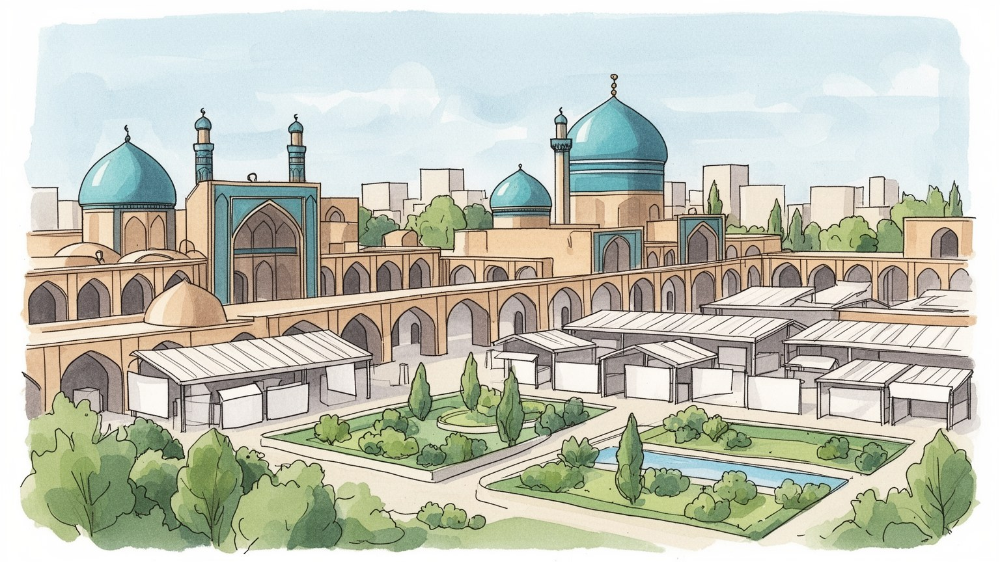
イスファハンはイラン高原中央部で、テヘラン、シーラーズ、ヤズド、湾岸方面を結ぶ内陸の要衝です。帝国首都の記憶は国家の文化外交を支え、同時に水配分、産業配置、制裁下の自立を考える都市でもあります。要所です。
バザール、観光、絨毯、金属細工、細密画だけでなく、鉄鋼、石油化学、機械、大学研究が雇用を支えます。制裁や物価上昇は材料費と輸出を揺らし、職人、工場労働者、若い専門職の将来に影を落とします。賃金も揺れます。
シーア派のモスク、神学校、ラマダンの時間、殉教者の記憶が都市の倫理を形づくります。ジョルファのアルメニア教会、ユダヤ人の歴史、詩や音楽、工芸の美意識も重なり、多層の信仰と文化が残ります。共存も焦点です。
観光客は広場、橋、バザールを歩きますが、住民の日常は水道、家賃、大学、病院、家族の食卓、夜の散歩にもあります。ザーヤンデ川が流れるかどうかは、景観だけでなく都市の気分を大きく変えます。生活実感です。
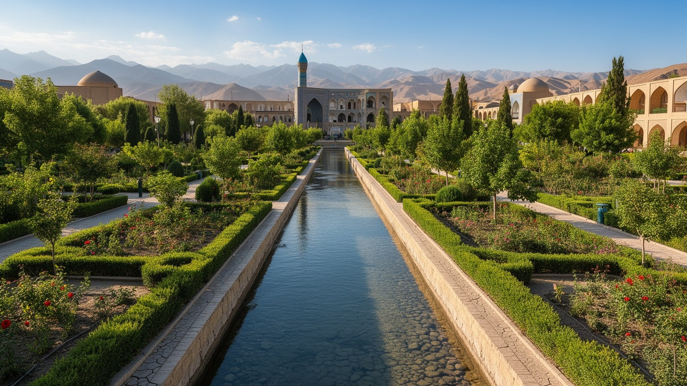
イスファハンはイラン高原中央部の乾いた盆地にあり、テヘランから南へ向かう幹線、シーラーズやヤズドへ抜ける道、ザグロス山脈から流れる水系が交差する場所に発展しました。海に面しない都市ですが、隊商路、軍事、行政、交易の結節として、内陸だからこその戦略性を持ってきました。ザーヤンデ川は都市の中心を潤し、農地、庭園、橋、街路の向きを決めましたが、近年は上流の取水、農業需要、産業用水、気候変動の影響で流れが不安定になっています。川が乾くと、橋は美しい構造物であると同時に、不足の記号になります。郊外には工業地、大学、住宅団地が広がり、歴史地区だけでは都市の輪郭を説明できません。イスファハンを読むには、帝国首都の幾何学的な中心と、乾燥地で水を配分する現代の政治を同じ地図に置く必要があります。水路、道路、鉄道、空港、周辺農村を追うと、都市の美しさが環境条件と資源管理の上に成り立つことが見えてきます。川辺の散歩、古い橋の下の集まり、乾いた河床を横切る通勤の風景は、地理が日常感情まで変えることを示します。高原都市の余白は広く見えますが、使える水と涼しい公共空間は限られます。だからイスファハンの地理は、広場の均整だけでなく、都市がどこまで膨らみ、誰に水を届けるかという問いでもあります。周辺の村や農地も、この水の判断に生活を左右されます。都市の縁でも同じです。
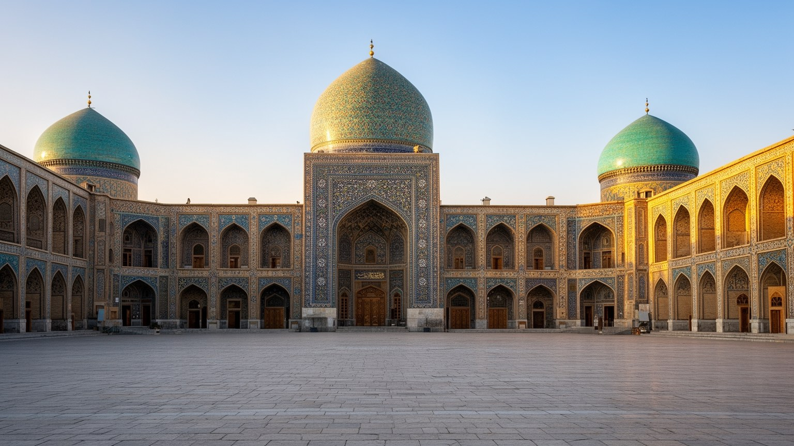
イスファハンが世界都市として記憶される最大の理由は、サファヴィー朝がここを首都に定め、王権、宗教、商業、儀礼を一つの都市空間に組み込んだからです。ナクシェ・ジャハーン広場は、その構想を最も鮮やかに示します。王の宮殿、王室モスク、ロトフォッラー・モスク、バザールの入口が広場を囲み、政治権力、シーア派信仰、交易が視覚的に結びつけられました。広場は単なる観光名所ではなく、国家が自分をどう見せるかを設計した舞台です。競技、儀礼、行列、商い、人々の滞在が重なり、都市は石とタイルだけでなく動きによって完成しました。現在も広場には観光客、家族連れ、職人、店主、警備、写真を撮る若者が集まります。ですが、帝国の美を眺めるだけでは足りません。首都建設は地方から人材と富を集め、宗教的正統性を固め、国際交易の入口を支配する政治的な事業でした。イスファハンの広場を歩くことは、都市デザインが権力の言語になり得ることを読む行為です。均整の取れた空間の背後には、職人の労働、税、軍事、宗教制度、外交の計算がありました。現在の保存と観光も、その歴史的な舞台をどのように使うかという政治を伴います。広場が人で満ちる時間には、過去の首都構想が現代の余暇と商売へ変換されていることがわかります。夜に照明が入ると、帝国の演出は市民の散歩道にも変わります。家族の写真にも残ります。
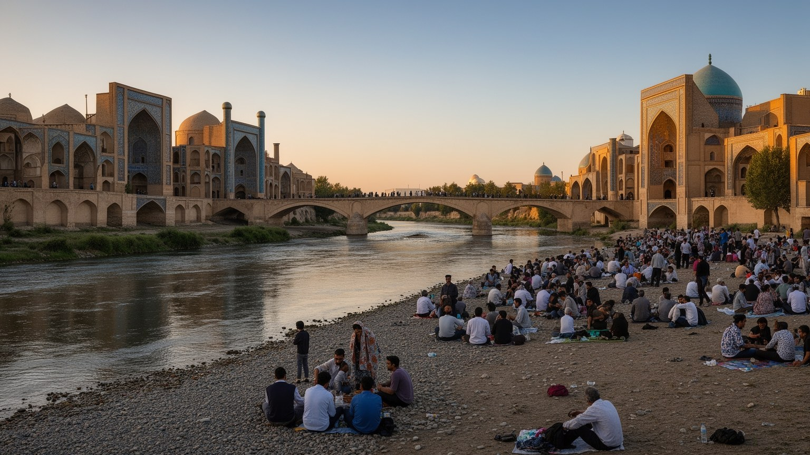
ザーヤンデ川とその橋は、イスファハンの都市感情を最も強く左右します。スィーオセ橋やハージュ橋は、交通路、堰、休憩所、社交の場を兼ね、川辺に歩く時間を生んできました。橋のアーチの下では歌い、話し、涼み、待ち合わせる人がいました。ところが近年、川はしばしば乾き、広い河床が都市の中央に露出します。水不足は景観の問題ではありません。上流の農業、隣接州との配分、都市人口、工業用水、地下水、干ばつ、行政の判断が絡み、農民の抗議や市民の不満にもつながります。川が流れない時、橋は過去の豊かさと現在の不安を同時に見せます。観光写真では青い水とタイルの美しさが強調されるが、住民にとって川は気温、湿度、公共空間、記憶、地域の誇りを支える存在です。水が戻る季節には、家族連れが増え、夜の散歩が明るくなり、都市の表情が変わります。イスファハンの橋を読むには、建築史だけでなく、乾燥地の公平な水管理を考える必要があります。水路を誰が使い、誰が不足を引き受け、どの産業が優先されるのかが問われます。橋はその問いを静かに都市の中心へ置いています。乾いた河床を歩く人の姿は、記念碑の美しさよりも現代的な問題を雄弁に語ります。水の将来は、観光の印象だけでなく、農地、雇用、健康、都市の安心を左右します。橋に集まる歌声や会話も、水がある日とない日で響き方が変わります。街の記憶も揺れます。
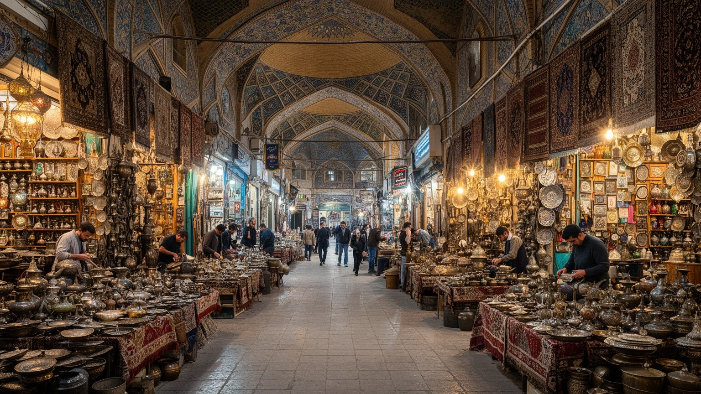
イスファハンのバザールは、土産物を買う通路ではなく、都市の経済、信頼、技能、宗教施設、近隣生活が組み合わさる場所です。絨毯、ミーナーカーリー、ハータム細工、銅器、細密画、タイル、布、香辛料、日用品が並び、職人の手と商人の交渉が都市の名声を支えます。工芸は美しい完成品だけで語れません。材料の価格、輸出規制、観光客数、為替、若い後継者の不足、オンライン販売、模倣品との競争が、工房の毎日を変えます。バザールの通路にはモスク、隊商宿、倉庫、茶を飲む場所があり、商売は信仰や親族関係とも切り離せません。制裁下では国際送金や素材調達が難しくなり、職人と店主は価格を上げにくいまま費用増を受け止めることがあります。一方で、手仕事は都市のアイデンティティを保ち、観光客にイスファハンらしさを伝える力を持ちます。重要なのは、工芸を過去の伝統として固定しないことです。若い職人は新しいデザインや販路を試し、家族経営の店はスマートフォンで顧客とつながります。バザールは古い空間でありながら、経済の変化に反応する柔らかい装置です。店先の値段交渉、工房の細かな作業音、昼の祈り、夕方の閉店準備を追うと、イスファハンの文化は展示棚ではなく働く時間の中で生きていることがわかります。手仕事を守ることは、景観保存と同じくらい、都市の雇用と尊厳を守ることでもあります。
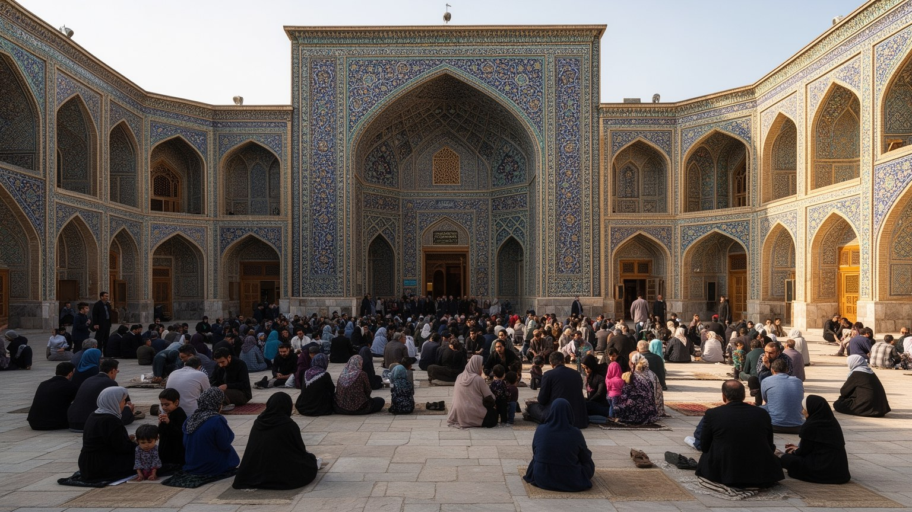
イスファハンはシーア派イスラムの都市であり、モスク、神学校、金曜礼拝、ラマダン、殉教者の記憶が公共空間の時間を形づくります。サファヴィー朝がシーア派を国家の柱にした歴史は、タイル装飾の美しさだけでなく、宗教制度と政治権力の結びつきとして理解する必要があります。一方で、都市の宗教的風景は単一ではありません。ジョルファ地区にはアルメニア人キリスト教徒の歴史があり、ヴァンク大聖堂、学校、店、家族の記憶が残ります。ユダヤ人共同体の長い歴史もあり、イスファハンは多数派の信仰と少数派の存在が重なってきた都市です。少数派の歴史は観光の異国情緒として消費されやすいが、実際には移住、保護、制約、商業、言語、家族の選択を伴っています。現代のイラン社会では宗教的規範、服装、教育、女性の自由、世代間の価値観をめぐる緊張も都市の日常に現れます。宗教を読むことは、礼拝所の建築を眺めるだけではなく、誰がどの場所で祈り、学び、働き、何を言いにくいのかを見ることでもあります。イスファハンの豊かさは、壮麗なシーア派建築と少数派地区の記憶を同じ都市の歴史として扱う時に深くなります。信仰は観光資源であり、社会規範であり、家族の支えでもあります。その重なりを理解すると、都市の美しさの背後にある緊張と共存が見えてきます。祝祭の日には、街路の音や商いの時間も変わります。
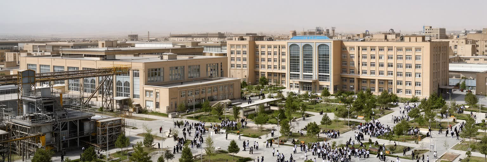
イスファハンは世界遺産の街として語られがちですが、現代の経済は工芸と観光だけではありません。周辺には鉄鋼、機械、石油化学、セメント、軍需関連、食品加工などの産業があり、大学や研究機関も人材を供給します。工業は雇用と都市所得を支え、制裁下の国内生産を担う一方、水とエネルギーを大量に使い、大気汚染や環境負荷を生みます。乾燥地の都市で重工業を維持することは、農業、飲料水、景観、健康との配分をめぐる政治判断でもあります。工場で働く人、大学で学ぶ技術者、部品を運ぶ物流、郊外の住宅団地は、歴史地区の観光客には見えにくいですが、現代イスファハンの基盤です。制裁や通貨不安は設備更新、輸入部品、賃金、雇用の安定に影響し、若い専門職の将来設計を難しくすることもあります。都市の誇りがタイルと橋に集中すると、工場労働の現実や環境負担は背景に押しやられます。ですが、イスファハンを総合的に読むには、手仕事の繊細さと重工業の規模を同時に見る必要があります。どちらも技術であり、どちらも家計を支えます。焦点は、限られた水と空気を使いながら、どの産業をどう持続させるかです。歴史都市の未来は、遺産保存だけでなく、環境負荷の少ない雇用と研究開発を育てられるかにもかかっています。大学と工場の関係は、若者がこの都市に残れるかを左右します。職場の安定は家族の将来設計にも直結します。
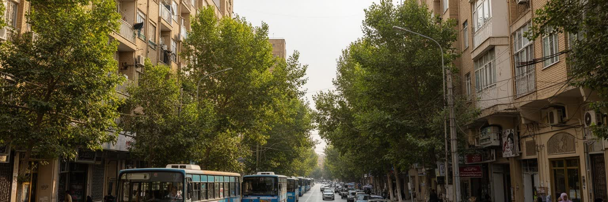
イスファハンの日常は、広場とモスクだけでは説明できません。住宅地、学校、病院、大学、バス停、地下鉄、食料品店、パン屋、家族の集まり、夜の散歩が都市の手触りを作ります。歴史地区には古い中庭住宅や細い路地が残る一方、新しい集合住宅や郊外開発も広がり、家族の住まい方は変化しています。物価上昇、通貨の不安、若者の雇用難は、結婚、独立、教育、家計の計画を重くします。都市の公共空間では、家族連れや若者が橋や公園に集まり、涼しい夜の時間を使って会話します。サッカー観戦、大学の友人同士の散歩、店先のニュース、SNSで回る物価や求人の話も日常を動かします。宗教的規範や社会的な視線は服装や男女の振る舞いに影響しつつ、若い世代は学び、働き、友人と過ごす場所を探します。水不足は家庭にも入り込み、庭、洗濯、食卓、暑さへの備えを変えます。観光客が短時間で見るイスファハンの美しさの背後には、日用品の価格、交通費、親の介護、子どもの進学、医療へのアクセスがあります。日常生活を読むことで、都市は過去の名建築ではなく、現在の家族が不安と楽しみを配分する場所として見えてきます。特に夜の街路は重要で、暑さが弱まり、買い物、散歩、軽食、親族訪問が増える時間に都市の社会性が現れます。歴史的景観を守ることと、住民が無理なく暮らせる住宅を確保することは対立しやすいですが、どちらかを欠けば都市の厚みは失われます。
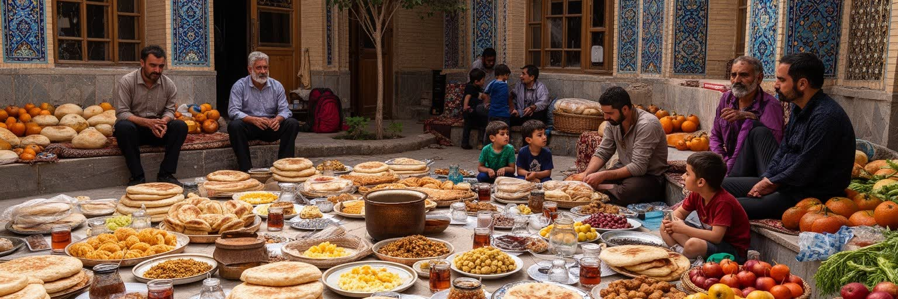
イスファハンの食と余暇は、都市の硬い歴史を日常へ戻します。名物のビリヤニ、甘い菓子、サフランやピスタチオを使った土産、ナン、ハーブ、茶、家庭料理は、観光客の楽しみであると同時に住民の季節感を支えます。バザールの食堂、家族で入るレストラン、大学近くの軽食、夜の屋台、親戚の家での食卓は、都市の社交を生みます。イラン社会では家庭のもてなしが重要で、食は親族関係、結婚、祝い事、喪の時間とも結びつきます。余暇では、広場での散歩、橋の近くの会話、公園、買い物、写真撮影、郊外への小旅行が目立ちます。ザーヤンデ川が流れる時、川辺の夜は都市の大きな居間のようになり、乾いている時にはその欠落が強く感じられます。食の価格上昇は家計に直接響き、外食の頻度や土産物の買い方も変えます。観光都市の食文化を読むには、名物料理の説明だけでなく、誰が材料を仕入れ、誰が調理し、誰が外で食べる余裕を持つのかを見る必要があります。食卓と散歩は政治から遠く見えますが、実際には物価、水、ジェンダー、公共空間の自由と結びついています。イスファハンの魅力は、壮麗な建築を見上げた後、茶を飲みながら人々の会話と街の速度に耳を澄ませる時に深まります。甘い菓子や温かい料理は、旅行者にも住民にも、乾いた高原の都市を少し柔らかく感じさせます。市場の匂いや夜風も、街の記憶を日々更新します。
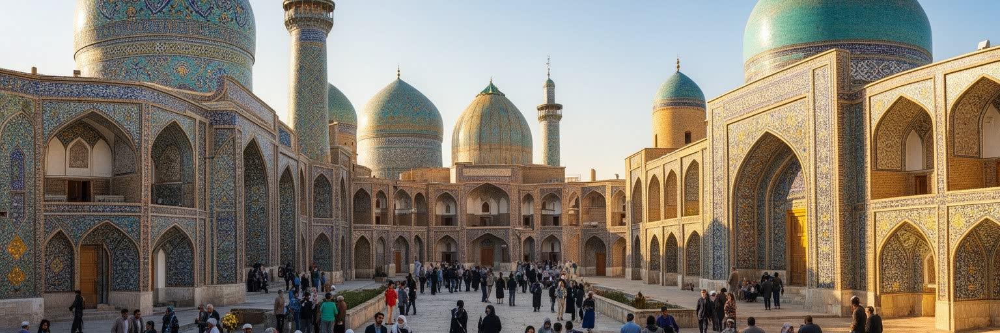
イスファハンの観光は、広場、モスク、宮殿、橋、バザール、ジョルファ地区を結ぶ強い回遊性を持ちます。訪れる人はタイルの青、ドームの形、橋の反復、広場の広さに圧倒されるが、遺産を公開し続けるには細かな管理が必要です。石材やタイルの劣化、振動、大気汚染、地下水、観光客の集中、露店や交通の整理、宗教施設としての静けさの確保が重なります。写真を撮る場所は自由に見えても、礼拝者、店主、住民、警備、修復職人が同じ空間を使っています。国際関係や制裁、航空便、通貨の変動は観光客数に影響し、ホテル、ガイド、店、職人の収入を揺らします。観光は都市の外貨と誇りを支える一方、歴史地区の家賃上昇や土産物化を進めることもあります。遺産管理で重要なのは、美しい景観を保存するだけでなく、住民がその近くで暮らし、働き続けられることです。イスファハンの名所は完成した舞台ではなく、日々使われ、修理され、交渉される都市空間です。観光客がゆっくり歩ける動線、地元の人が通勤や買い物に使う道、宗教行事の時間、修復の足場は互いに影響し合います。優れた遺産都市であり続けるには、訪れる人の感動と、住む人の生活の両方を測る視点が欠かせません。美しさの維持は、見えない労働と制度によって支えられています。案内人の語りや清掃の手間も、旅の印象を静かに支えます。修復の判断も重要です。
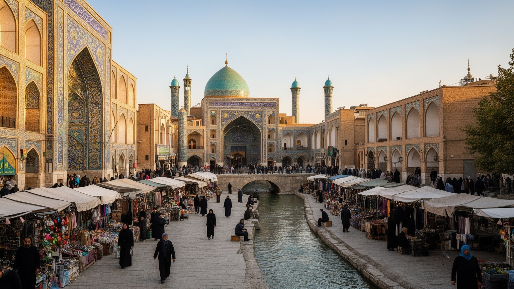
イスファハンを読む難しさは、あまりにも整った美が都市の矛盾を隠しやすい点にあります。広場、ドーム、橋、バザールは世界的な魅力を持ち、サファヴィー朝の都市計画が今も強い説得力を放ちます。しかし、その近くでは川の水不足、工業用水、農民の不満、大気汚染、制裁下の経済、若者の雇用、住宅費、宗教規範、少数派の記憶が日常を形づくっています。歴史都市としてのイスファハンは、過去を保存するだけでは成立しません。職人が働き、工場が動き、学生が学び、家族が川辺を歩き、店主が材料費を計算し、行政が水と観光を調整することで、都市は続いています。だから、イスファハンの価値は「美しい古都」という一語では足りません。美は確かに中心にありますが、その美は乾燥地の資源、帝国の政治、宗教の制度、商業の技術、家庭の忍耐の上にあります。川が流れる日と乾く日を比べ、広場の光と工業地の煙を同じ都市の現象として見れば、イスファハンはより立体的になります。観光客にとっては記憶に残る目的地であり、住民にとっては将来を選び続ける生活の場所です。その二つの視点を重ねることで、イラン高原のこの都市が世界史の遺産であると同時に、現代の水、仕事、信仰、自由をめぐる都市であることが見えてきます。完成された景観ではなく、緊張を抱えながら使われ続ける都市として読む必要があります。